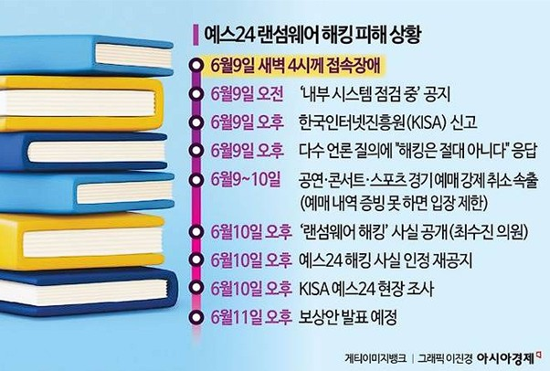

2025년 6월 9일에 국내 온라인 대형 서점인 예스24 관련 온라인 서비스가 전부 마비되었습니다. 예스24 홈페이지는 물론 모바일 앱, 크레마 eBook 서비스 등이 모두 마비되었습니다. 이러한 서비스 먹통 사태로 인하여 도서 검색, 주문, 배송, 티켓 예매, eBook 서비스 등 예스24의 온라인 서비스 전반을 이용할 수 없게 되어 도서 주문이 취소되거나 티켓 예매 일정 조정, 팬사인회 응모가 취소되는 사태가 발생하였습니다.
뉴스 보도에 따르면 데이터 유실 여부조차도 확인이 되지 않았고, 백업 데이터조차 유실될 가능성이 제기되었습니다. 한국인터넷진흥원 자료에 따르면, 해당 사태는 랜섬웨어 해킹 피해로 발생했다고 합니다. 백업 데이터 마저 랜섬웨어 피해 등으로 손상된 것으로 추정되는 이유는 백업된 데이터가 있다면, 해당 데이터로 롤백하면 되는데 복구 시간이 오래 걸렸다고 합니다.
그동안 데이터를 제대로 백업하지 않았거나 백업 데이터에 대한 망 분리가 제대로 이루어지지 않아서 백업 데이터 역시 랜섬웨어 피해를 받았을 가능성이 제기되었습니다. 또한 보도에 따르면 해커로부터 금전적인 요구를 받았다고 알려졌으나 이는 확인되지 않았다고 합니다.
그런데 해당 기업이 8월 11일에 또 랜섬웨어 공격을 받았습니다. 이번에는 백업 데이터를 활용해 7시간 만에 복구했지만, 보안 강화 약속에도 재감염이 발생하면서 우려가 커지고 있습니다. 예스24 관계자는 재감염과 관련해 사과 성명을 내고 KISA와 함께 사고 조사를 진행 중이며, 두 감염이 연관이 있는지는 조사 결과가 나와야 알 수 있다고 밝혔습니다.
보안 전문가는 예스24의 재감염 이유에 대하여 다양한 원인을 짚고 있습니다. 과거 공격 이력으로 인한 표적화, 복구 과정에서 남은 취약점과 잔존 악성코드, 운영체제 백업시스템 등 기술적 한계, 사후 보안 조치 미흡 등입니다.
보안 전문가들은 해커의 협상에 응하면 다른 해커들이 같은 표적을 반복해서 노리는 경향이 강하다고 분석합니다. 한번 금전을 지급한 전례가 알려지면 해커들 사이에서 표적이 되기 쉽다고 합니다. 랜섬웨어가 서비스(aaS) 형태로 유통되면서 특정 기업을 겨냥한 시도가 반복되는 구조라고 합니다.
또한 백업 데이터 관리의 중요성이 대두되고 있습니다. 백업 시스템이 있다고 해도 로컬에만 두면 무력화될 수 있습니다. 운영 서버와 같은 네트워크나 장비에 백업을 저장하면, 해커가 침투했을 때 운영 데이터 뿐만 아니라 백업 데이터까지 함께 암호화하거나 삭제할 수 있다고 합니다. 백업은 물리적으로 분리된 저장소나 외부 클라우드, 오프라인 매체 등에 보관하는 것이 안전하다고 합니다.
마지막으로 사후 조치 미흡, 시스템 환경 취약성, 보안체계 한계 등을 지적하고 있습니다. 랜섬웨어 감염 후 백업과 복구만으로 끝내면 보안 홀이 남아서 동일한 수법으로 재침투가 가능하다고 합니다.
← 목록으로 돌아가기